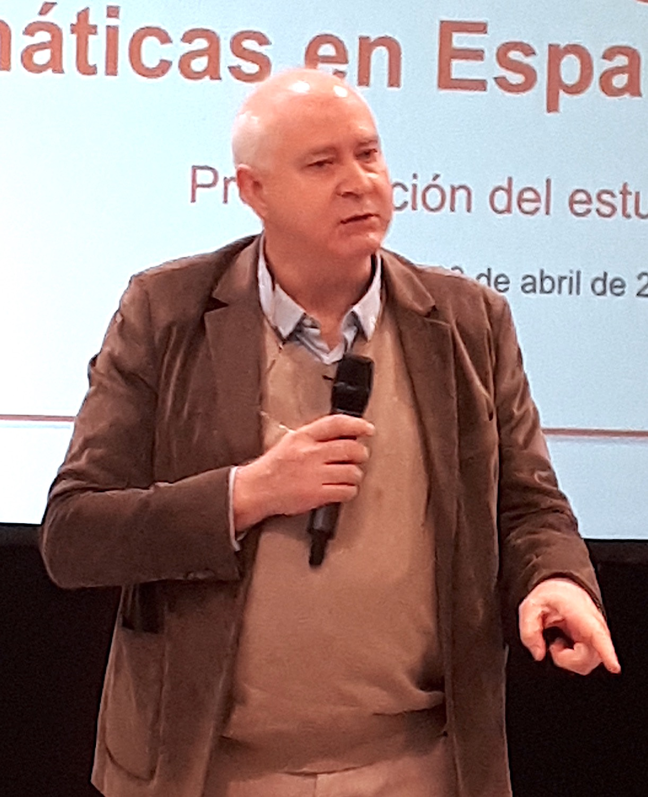
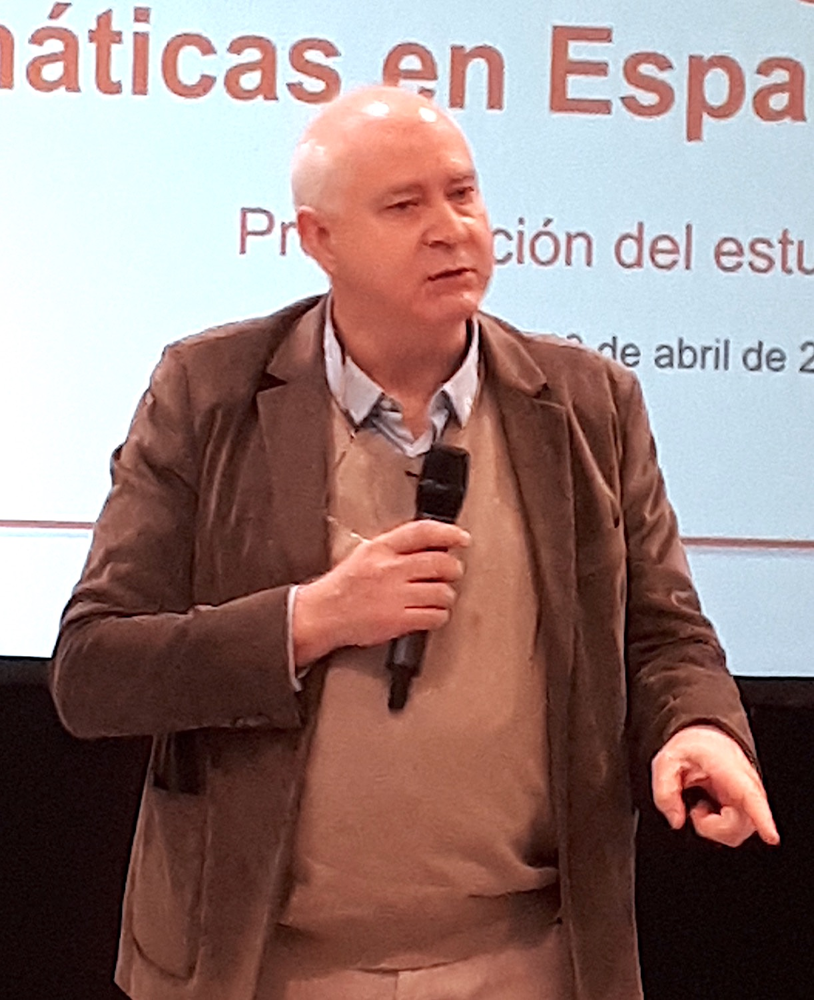
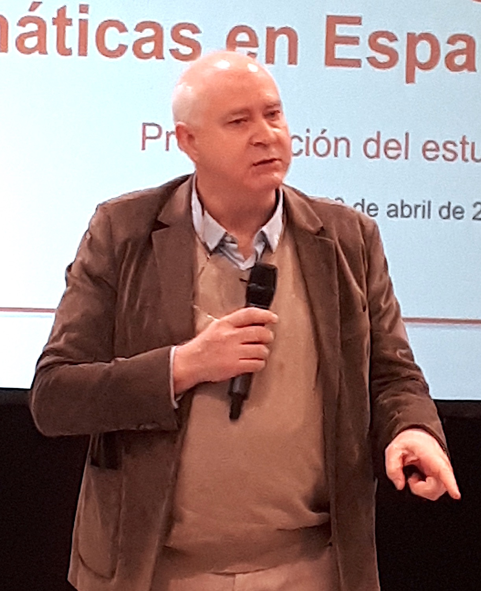

 (a) Izquierda, C. Barrabés; foto de FOG. Derecha, G. Curbera; foto de F. Ortega Riejos.
Red Estratégica en Matemáticas
La Red Estratégica en Matemáticas, REM, se configuró en 2016 como una red de todos los nodos de relevancia en la investigación y transferencia matemática en España, integrando de hecho a toda la comunidad investigadora en este ámbito. Se partió de la alta estructuración de esta comunidad, comenzada décadas atrás. La REM es un proyecto financiado por la Agencia Estatal de Investigación, formado por
El proyecto está coordinado por el IMUS, Instituto de Matemáticas de la Universidad de Sevilla.
Partiendo de la consideración del carácter estratégico de las matemáticas reconocido en los planes nacionales de I+D+i, sus objetivos consisten en la mejora del posicionamiento estratégico nacional e internacional y el impacto científico y económico de la matemática española. En este marco se desarrollan seis acciones estratégicas:
Las Acciones de 2 a 5 impulsan directamente el posicionamiento estratégico de las matemáticas en España en diferentes ámbitos. Por su parte, el objetivo de las Acciones 1 y 6 es efectuar un balance exhaustivo de la situación actual del impacto científico y económico de las matemáticas en España, como base para su potenciación posterior.
El presente estudio es el previsto en la Acción 6, realizado por Afi, Analistas Financieros Internacionales.
Figura 1
El profesor T. Chacón y la ministra de
Industria,
Comercio y Turismo,Doña
María ReyesMaroto Illera.
Foto de
Francisco Ortega Riejos.
El pasado 10 de abril de 2019 se celebró en el local Barrabés.biz, Madrid, el acto de presentación del estudio del «Impacto Socioeconómico de la Investigación y la Tecnología Matemáticas en España». Este estudio fue encargado por la Red Estratégica en Matemáticas, REM, a la consultora Analistas Financieros Internacionales, Afi.
El acto fue presidido e inaugurado por la Excma. Sra. Ministra de Industria, Comercio y Turismo, Doña María Reyes Maroto Illera. Intervinieron también Don Carlos Barrabés, como anfitrión; el profesor Guillermo Curbera Costello, de la Universidad de Sevilla, como coordinador del Estudio de Impacto Económico de las Matemáticas; el profesor Tomás Chacón Rebollo, de la Universidad de Sevilla, como coordinador de la Red Estratégica en Matemáticas; y Don Diego Vizcaíno Delgado, en su calidad de socio de Afi, quien hizo una presentación breve del informe.
A continuación, se celebró una interesante mesa redonda bajo el título «Debate sobre matemática e innovación empresarial en España» moderada por Don Juan Antonio Tébar, director de Programas de UE y Cooperación Territorial del Centro para el Desarrollo Tecnológico Industrial, CDTI. Intervinieron en la mesa Doña Irene García Sáez, Ceo en Insure and Go Insurance, Londres; Don Alberto Ariza Lasarte, asesor estratégico de la empresa Big Machine Learning, BigML; la profesora Peregrina Quintela Estévez, de la Universidad de Santiago de Compostela, presidenta de la Red Matemática-Industria, math-in, y miembro de la Red Estratégica en Matemáticas; y Alejandro Llorente Pinto, cofundador de la empresa PiperLab.
En relación con este informe elaborado por Afi, la REM ha publicado el siguiente comunicado de Prensa:
El informe completo puede descargarse desde aquí.
Algunos medios digitales se han hecho eco de la celebración de este acto, lo que justifica la especial relevancia de la presentación de este informe:

(a) Izquierda, C. Barrabés; foto de FOG. Derecha, G. Curbera; foto de F. Ortega Riejos.

(b) Izquierda, T. Chacón; foto de F. Ortega Riejos. Derecha, D. Vizcaíno; foto de FOG.
(c) Inicio de la mesa redonda «Debate sobre matemática e innovación empresarial en España».
De izquierda a derecha J. A. Tébar, I. García, A. Ariza, P. Quintela y A. Llorente. Foto de FOG.
Figura 3
Algunos momentos del acto de presentación del estudio sobre el Impacto socio-económico
de la investigación matemática y de la tecnología matemática en España celebrado el pasado
10 de abril de 2019 en Madrid.
Figura 4
La ministra de Industria, Comercio y Turismo, María Reyes Maroto Illera inaugura el
acto de presentación. Foto de FOG.
Las matemáticas constituyen un conjunto de lenguajes conceptuales, artificiales y simbólicos, altamente elaborados para la comunicación entre seres humanos, cuyo aprendizaje permite resolver problemas económicos vitales para el funcionamiento de una sociedad. Por ende tienen una elevada presencia en la tecnología y la economía. Desde el procesamiento de datos de producción o consumo en una computadora, al razonamiento lógico utilizado para justificar una u otra decisión de política económica, las matemáticas se encuentran presentes en la realidad cotidiana, posibilitando la propia existencia de relaciones económicas. Podría argumentarse que sin lenguajes y conceptos matemáticos los individuos no podrían realizar la inmensa mayoría de las transacciones económicas que tienen lugar habitualmente.
La naturaleza económica de las matemáticas como bien semipúblico dificulta su medición con la lógica de la Contabilidad Nacional, una problemática que se agranda cuando se tiene en cuenta su capacidad para derivar externalidades positivas o beneficios al conjunto de la sociedad, que no necesariamente participa en su producción.
Sin embargo, su condición de bien privado caracterizada por los beneficios apropiables que su uso extiende en las actividades económicas permite realizar una aproximación parcial de su peso o relevancia económica. No conviene olvidar que la participación de las matemáticas en las actividades productivas es transversal, pues afecta a todos los sectores, así como interviene en las distintas fases del proceso de producción de bienes y servicios. Desde el diseño, modelaje, simulación y prototipado de productos, a la optimización de procesos productivos y organizativos y el análisis de los datos. Facilitar la generación de beneficios o incentivos a la explotación de las matemáticas en su dimensión de bien privado pasa necesariamente por la intervención pública, entre otras razones, para reducir los costes de aprendizaje.
La revolución de Internet ha situado a las matemáticas como input fundamental de la producción, en tanto en cuanto los servicios —responsables de más del 75% del PIB— han ido incorporando de manera creciente tanto capital físico-tecnológico basado en matemática —tecnologías de la información y las comunicaciones, softwares, dispositivos electrónicos, etc.—, como capital humano matemático.

Figura 5
Estimación de impacto directo, indirecto e inducido de las actividades intensivas en
matemáticas sobre el empleo en España (%total ocupados) según nivel educativo
completado, 2016. Fuente: Afi, INE (microdatos EPA, TIO).
En la medida en que las matemáticas forman parte del stock de capital humano y también del stock de capital físico, puede considerarse como un Input (oferta). No obstante, existen bienes o servicios cuya naturaleza es matemática (una prima de seguro, por ejemplo), por lo que también pueden considerarse como un Output (demanda). Un enfoque combinado de ocupaciones y productos, revela que las actividades con intensidad matemática generaron un millón de ocupados en España en 2016, lo que representó el 6% del empleo total. Al añadirse los empleos indirectos e inducidos, el impacto de las matemáticas en el mercado de trabajo español se eleva hasta el 19,4% del total de los ocupados en 2016.
En términos de Valor Añadido Bruto (VAB), el impacto de las actividades con intensidad matemática se situó en el 10,1% del total en 2016 (26,9% del total si se añadiesen los efectos de arrastre). Las actividades económicas con mayor impacto de las matemáticas son la informática, las actividades financieras, los servicios de telecomunicaciones y la rama de energía eléctrica y gas.
La magnitud de estos impactos es menor que la obtenida en otros países europeos donde se ha realizado un estudio similar, ya que en términos de empleo el impacto directo oscila entre el 10-11% del total, mientras que en VAB el intervalo se encuentra entre el 13-16% del total.
La productividad de las ramas económicas en las que trabajan este tipo de profesionales en España se sitúa en 47,2 € por hora trabajada en 2016, homologable a la de los países comparables. La diferencia del impacto se explica, por tanto, por la estructura productiva española, que está más orientada hacia actividades con menor presencia de profesiones que requieran cierta intensidad matemática.
España destaca por estar muy rezagada en profesiones de intensidad matemática como especialistas en bases de datos y redes informáticas, finanzas, profesionales de las tecnologías de la información o diseñadores de software y multimedia.
Figura 6
Estimación de impacto directo, indirecto e inducido de las actividades intensivas en
matemáticas sobre el VAB en España (% total) según nivel educativo completado,
2016. Fuente: Afi, INE (microdatos EPA, TIO).
Las matemáticas están en la base de la pirámide del stock de ideas y conocimientos que tienen aplicaciones productivas. Las modernas teorías del crecimiento económico ligan la evolución de la renta per cápita a largo plazo a la tasa a la que se acumula el conocimiento, que induce aumentos de la productividad del trabajo. Constituye un conocimiento estratégico para que la economía española y su tejido empresarial puedan aprovechar las oportunidades derivadas de la revolución tecnológica asociada a la robotización y la Inteligencia Artificial. Si España incrementase la proporción de graduados STEM1 sobre el total de la población al mismo nivel que en Francia, la productividad del trabajo podría aumentar en un 2,2% sobre los valores actuales.
Para que todo esto sea posible, sería recomendable, entre otras cuestiones, (i) que las matemáticas adopten un papel protagonista en el modelo educativo, (ii) se mejore el engarce entre el mundo académico y el empresarial, (iii) se potencie la investigación y las matemáticas aplicadas, y (iv) se visibilice en el entorno empresarial la utilidad que reportan las matemáticas en las diversas fases del proceso productivo.
Figura 7
Distribución de ocupados desempeñando ocupaciones de intensidad matemática en
España, UE-15, Reino Unido, Francia y Holanda (% total ocupados), 2015. Fuente: Afi,
Cedefop.
Entre las conclusiones de este estudio, destacan las siguientes:
Por todo ello, sería recomendable:
|
La REM es un proyecto financiado por la Agencia Estatal de Investigación |
|
_____________________________________ ◇◇◇_____________________________________
1N. del e.: Acrónimo usado para referirse a las disciplinas Ciencia, Tecnología, Ingeniería y Matemáticas, en sus iniciales en inglés.